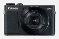
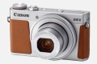
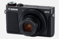
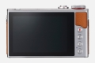
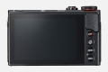
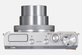
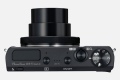

器材库 > 不可换镜头数码相机 > PowerShot G9 X Mark II

规格总览
发布日期
2017-01-05
影像规格
影像传感器
CMOS
影像传感器尺寸
1英寸（13.2×8.8mm）
总像素
2090万
有效像素
2010万
影像处理器
DIGIC 7
静态图像格式
JPEG, RAW
静态图像尺寸
大：5472×3648 中：3648×2432 小1：2736×1824 小2：2400×1600 RAW： 5472×3648
短片格式
MPEG4-AVC/H.264
短片尺寸
1920×1080, 1280×720, 640×480
音频格式
MPEG - 4 AAC LC（立体声）
防抖系统
IS光学影像稳定器
镜头和对焦
焦距
10.2mm-30.6mm
等效35mm画幅焦距
28mm-84mm
最大光圈
f/2.0-4.9
光学变焦
3倍
最近对焦距离
广角5cm, 长焦35cm, 微距5cm
对焦模式
单点自动对焦/ 智能面部优先+追踪
曝光控制
场景模式
人像/摇摄/星空（星空人像/星空夜景/星空轨迹/星空间隔短片）/手持拍夜景/颗粒黑白/背景散焦/柔焦/鱼眼效果/油画效果/水彩画效果/玩具相机效果/微缩景观效果/高反差景物/焰火
快门速度
30-1/2000秒，B门（最长曝光时间256秒）
ISO感光度
自动， ISO 125-ISO 12800 以1/3级增减
白平衡
自动/日光/阴影/阴天/钨丝灯/白色荧光灯/闪光灯/用户自定义模式/色温
连拍
最快约8.1张/秒（单次自动对焦）最快约5.3张/秒（伺服自动对焦）
拍摄模式
自动/P程序/ Tv快门优先/Av光圈优先/M手动/C用户自定义/混合式自动/ SCN特殊场景/ /短片
取景规格
LCD尺寸
3.0英寸
LCD像素
104万
LCD特性
触摸屏
文件输入/输出
存储卡
SD/SDHC, SDXC
数据接口
USB2.0
视频/音频接口
HDMI 输出
无线功能
Wi-Fi, NFC, 蓝牙
电源
电池
可充电锂离子电池
外观
颜色
银色, 黑色
尺寸
98.0×57.9×31.3mm
重量
仅机身约182g / 含电池和存储卡约206g
其它
附件
电池充电器CB-2LHT，锂离子充电电池NB-13L，腕带
该产品暂无存档的网友点评
产品图 / 样片
PowerShot G9 X Mark II
PowerShot G9 X Mark II

PowerShot G9 X Mark II

PowerShot G9 X Mark II

PowerShot G9 X Mark II

PowerShot G9 X Mark II

PowerShot G9 X Mark II

PowerShot G9 X Mark II
评测 / 相关文章
- 详细内容 （存档）
- 掌心雷 佳能PowerShot G9X MarkII评测 （存档）
- ［试用］海洋追随日记 神奇动物在这里 （存档）
相关文章
- ［试用］我有时尚新机，你有freestyle吗 （原站已下线）
- ［试用］小机身大作为 口袋相机也能出大片 （原站已下线）
- ［试用］海洋追随日记 神奇动物在这里 （存档）
- ［试用］佳能PowerShot G9X MarkII评测 （存档）
- ［资讯］佳能发布G9X MarkII等4款相机新品 （存档）
- ［试用］佳能G9X Mark II一台被忽略了的好机器 （原站已下线）